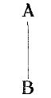

Беседа 3439 от 3877 · Беинса Дуно
Трите перпендикуляра
Размишление
За следващия път пишете върху темата „Прилежание“. Думата „прилежание“ произлиза от лежа, прилагам. – Кога ляга човек? – Когато спи. Сънят означава почивка. За да си почине добре, човек променя условията, обстановката, в която се намирал. Значи, той отива от един свят в друг. Той напуска физическия свят и отива в духовния да се учи. Ето защо, прилежният човек отива от едно училище в друго, да се учи. Който не се движи между два свята, не може да бъде прилежен. Ако уподобим двата свята на две точки, казваме, че човек трябва да се движи между две точки, за да образува права линия, т.е. път. Само онзи може да учи, да прилежава, който обича науката. Само онзи може да яде, който обича хляба. Ако нямаше любов към хляба, човек не би ял. Изобщо, човек яде само онова, което обича. Не обича ли нещо, той не го слага в устата си. На същото основание, казваме: Човек живее, защото обича живота.
Кои са двете точки на живота, между които човек се движи? – Скръбта и радостта. Скръбта представлява южния полюс на живота, а радостта – северния. – Не може ли без скръб? – Не може. Тя е най-добрият професор на човека. Тя го възпитава, учи го на ум и разум. Където влезе скръбта, всички започват да учат. Тя предава уроци на всички хора. Няма човек в света, който да не учи при скръбта. Тя дава програма на всекиго и ако не я изпълни, положението се влошава. Като влезе скръбта в дома на някого, той започва да скърби. Думата „скърби“ е образувана от две срички – скър-би. Сричката „би“ има няколко значения: минало време от спомагателния глагол „съм“; минало свършено време на глагола „бия“. Майките бият децата си обикновено по задницата, която е свързана с нервната система. С това те искат да събудят нервната им система, да бъдат внимателни, да избират мястото, където сядат, за да могат добре да учат. Като научат уроците си, или като свършат добре работата си, децата се радват. И възрастният се радва, като учи и работи. Радостта е богата трапеза, пред която всеки сяда да яде и да пие. Радостта дава угощение на онзи, който е свършил някаква работа. Тази е причината, поради която всеки се стреми към радостта. Обаче, тя се ражда от скръбта. Не можеш да се радваш, ако не си минал през скръбта. Коя майка не се е радвала, като роди здраво и живо дете? Обаче, докато е била бременна, докато е носила детето девет месеца в утробата си, тя е минала през големи скърби и страдания – животът ѝ е бил на косъм. Когато се роди детето, майката се радва, че се е родил човек на света.
Сега, като се говори за скръб и страдание, хората се плашат, считат ги за опасни. Те внасят някакви примеси в скръбта и в страданието, които ги правят опасни. Извадете примесите от тях и ще видите, че скръбта и страданието са приятни. Ето защо, чуете ли някой да казва, че скръбта е голяма, че положението му е опасно, ще знаете, че той е вмъкнал някакви примеси в скръбта си, които го плашат. Помогнете ли му да се освободи от примесите, да изчисти скръбта си от тях, ще видите, че той ще се усмихне приятно и ще се успокои. Ще остане скръбта в него, но тихо и с радост ще я носи. Ще знаете, че страданието и скръбта не са опасни, но примесите, които приличат по нещо на тях, са опасни. Водата не е опасна, но ракията, която прилича на вода, е опасна. Когато комисия от Съединените щати занесли на диваците английска ракия, наречена „уиски“, те казали: „Молим ви да ни освободите от тази дяволска вода“. И в страданието има уиски, което упоява и приспива човека. Следователно, когато страданието ви посети, не се страхувайте от него. Пийте от водата му и ще се благословите. Усетите ли, че във водата на страданието има и ракия, подложете го на пречистване. Ракията е опасна, а не водата. Ако не можете да освободите страданието от примесената в него ракия, вие трябва да го избягвате. Обаче, от чистото страдание и от чистата скръб не бягайте, но се учете.

Като се говори за правия път на живота, мнозина го свързват с човешките идеали. Като се стреми към постигане на известен идеал, човек естествено върви в правия път. Колкото по-висок е идеалът на човека, толкова по-прав е пътят, в който върви. Различни са идеалите на човека. За пример, идеалът на ученика е да учи и да свърши училище; идеалът на земеделеца е да изоре земята си и да я посее; идеалът на говорителя е да говори добре и да задоволи публиката; идеалът на музиканта е да свири добре; идеалът на художника е да рисува добре; идеалът на всеки човек, в широк смисъл, е да живее добре, т.е. да мисли, да чувства, да постъпва правилно и да се храни добре, да яде и да пие сладко. Човек се стреми към добър и правилен живот, за да придобие вечния живот. Под думите „вечен живот“ разбираме безконечен. Безконечните неща пък са неизмерими, т.е. няма мярка, с която да се измерят. Безконечният живот включва неизчерпаемите възможности и условия, а конечният – изчерпаемите. Безконечността или вечността води към велики и неизчерпаеми радости, а конечността – към временни, преходни радости.
Съвременните хора се страхуват от страданията и правят усилия да ги избягват. Някой казва: „Бял ден не видях от страдания!“ Това е преувеличаване. Колкото и да е голямо страданието, то е кратковременно. Последствията на страданието са продължителни, но самото страдание е кратковременно, както светлината. Щом е така, не се страхувайте, но вижте какво ще научите от него. То идва, като професор при вас, да ви посочи грешките. Ако сте цигулар и направите една грешка, страданието веднага идва да ви коригира; ако сте художник и грешите, страданието ще ви коригира. Дали правите добро или зло, то изправя грешките ви. Ще кажете, че злото не е на място и трябва да се избягва. Ако вникнете в последствията, които злото е причинило, ще видите, че и то е било на място. За пример, уволняват някого от служба. Той страда, недоволен е, но след време го назначават на друга, по-добра от първата служба. Ако не бяха го уволнили, нямаше да намери по-добра служба. Искате да постигнете едно желание, но нещо ви препятства. Не съжалявайте за това, но го заместете с друго. Ето защо, ако не можете да реализирате едно желание или една мисъл, заместете ги с други. Страданието учи човека да прави избор между мислите и желанията си. Като страда, той вижда грешките си и при всеки нов случай знае вече как да постъпва. Благодарете на страданието, то е професор, който ви учи да живеете правилно, да мислите, да чувствате и да постъпвате право. Като минете през школата на страданието, ще дойдат радостите, които също така са кратковременни. Ние говорим за перпендикулярите като за живи съзнания, по-високи от човека, които го ръководят. Докато не дойде едно високо съзнание да ви ръководи, вие нищо не можете да направите. За пример, как ще свирите на пиано или на цигулка, ако нямате учител, който да ви ръководи. Той ще ви запознае с имената и местата на тоновете по клавишите, или по струните на цигулката. В случая учителят или професорът е по-високото съзнание, което ви учи и води в пътя на музиката. Голяма е разликата между онзи, който знае да свири, и който не знае. Първият владее цигулката добре и чрез нея изразява това, което свири. Когато свири някоя Божествена мелодия, той повдига цигулката високо, главата – също, лицето му взима особен израз и лъкът се движи с необикновена лекота и приятност. Ако свири нещо от материален характер, той държи цигулката си надолу, към земята, лицето му е навъсено, мрачно и лъкът се движи тежко. – „Не може ли да свири човек без да приема един или друг външен израз?“ – Не може. Невъзможно е да свириш, да пееш или да говориш без да дадеш външен израз на това, което изпълняваш. Ако говориш в голям салон, без да искаш ще повишиш гласа си. Ако салонът е малък, гласът ти ще бъде естествен, без повишаване. Силата на гласа зависи и от тембъра. Някои гласове имат такъв тембър, че се чуват надалеч. Като слушате такъв глас, струва ви се, че е близо до вас, а всъщност той идва отдалеч, от два–три километра разстояние. Същото се отнася не само до гласа, но и до чувствата, мислите и постъпките на човека. Понякога те биват толкова интензивни, че проникват надълбоко и обхващат голям периметър. Като знаете това, стремете се да предадете интензивност на мислите и на чувствата си. Щом са интензивни, те са разумни и лесно могат да се реализират. Някой казва, че обича музиката, има желание да слуша видни музиканти и певци, но не му се иска да губи времето си да ходи по концерти. Щом казва така, желанието му да слуша музика и обичта му към нея не са интензивни. Каквито препятствия да срещне интензивното желание, непременно ще го преодолее. Затова е казано, че всичко, което човек желае, може да го постигне. – Кога? – Когато мислите и желанията му са интензивни. За такива желания няма спънки, няма обезсърчавания. От сто страни ще обикалят, но ще си пробият път. Ако се натъкнете на противодействия, приложете постоянство. – Кога се обезсърчава човек? – Когато желанията му не са интензивни, когато няма идеал, когато е изгубил перпендикуляра на живота си. За да се справи с обезсърчаването, човек трябва да регулира движението си съобразно перпендикулярите на живота – физическия, сърдечния и умствения. Обезсърчил се някой, т.е. отклонил се от перпендикулярите си и започнал да философства, че животът няма смисъл. Откъде знаеш това? На колко хора е обезсмислен животът? Ако твоят живот е обезсмислен, това не значи, че всички хора се намират в същото положение. Като не живееш разумно, естествено е да загубиш смисъла на живота си, но виж какво прави птичката. По цели дни тя търси храна, събира сламки, клечици, прави си гнездо и след като се излюпят малките, удвоява работата си, но въпреки това за нея животът не губи смисъл. Човекът, най-разумното същество, се осмелява да каже, че животът няма смисъл. Защо? Защото срещнал една малка спънка. Приложи постоянство и прилежание и спънката ще изчезне.
Хората се обезсърчават лесно, когато дойде гладът. Ако гладува няколко дни, човек казва: „Ще се мре, не може да се носи това положение“. Христос прекара в пост и молитва 40 дни. Ти не можеш ли да гладуваш поне три дни, без да се обезсърчиш? – Мъчно се справя човек с глада. – Вярно е това, но може да му противодейства. Ще кажете, че на онзи свят ще се освободите от глада. Но трябва да знаете, че гладът върви с човека и след смъртта. Там страданието на гладния е по-голямо от това на земята. Много естествено, гладен си, но нямаш уста, нямаш стомах, с които да се храниш; искаш да дишаш, нямаш дробове. И като умре, човек пак страда, гладът продължава да го мъчи. – Как ще се справи с глада? – Като си изработи духовни органи: стомах и дробове, чрез които да се храни и да диша. Един американец написал на английски една книга „Писма от онзи свят“, в която описва положението на човешката душа след заминаването ѝ от земята. В онзи свят душата вижда пред себе си богати трапези, с красиви, вкусни плодове, но щом се отправи към тях, да си хапне един плод, масите започват да се движат пред него, той след тях, но не може да ги стигне и да си вземе нещо за ядене. Желание за ядене има, но не може да го задоволи, понеже няма стомах. На друга страна вижда големи библиотеки с книги; иска да прочете нещо, пак не може – библиотеките започват да се движат; има желание да чете, но очи няма – не вижда написаното в книгите. Най-после вижда група приятели; иска да се поразговори с тях, но и те се движат, не може да ги стигне. Както виждате, на онзи свят има всичко, каквото и на земята, но човек няма органи, с които да се ползва от благата, от които се нуждае. Това показва, че повечето от хората са заминали преждевременно за онзи свят, не са свършили земната си работа. Много хора пък не са живели добре на земята. Който не живее добре на земята и на онзи свят не е добре. За него онзи свят е илюзорен, т.е. свят на непостигнати желания. Който живее добре на физическия свят и в духовния ще живее добре – пътят му е отворен. Както и да се описва онзи свят, той остава неразбран. Двама милионери се срещат. Единият запитва другия: „Приятелю, защо си отслабнал толкова много? Защо не се храниш добре? Пари имаш, нищо не те ограничава“. – „Не ми позволяват.“ – „Кой не ти позволява? Не разбирам как може някой да ти пречи да ядеш.“ – „Лекарите не ми позволяват.“ – „Защо?“ – „Имам язва в стомаха.“ – „Това е друг въпрос, разбирам положението ти.“ Такова е положението на всеки човек, който заминава неподготвен за онзи свят – има язва в стомаха, в ума и в сърцето си; не може да яде, да мисли и да чувства.
Като се намерят пред някаква мъчнотия, хората казват: „Невъзможно е да се нареди тази работа“. – Защо да е невъзможно? Всичко имат на разположение, нищо не ги ограничава. – „Отвън имам всичко, но язвата в ума ми пречи.“ – Това е друг въпрос. Аз пък казвам: Извадете язвата от ума си и ще видите, че невъзможните неща стават възможни. Невъзможно е да свириш добре на ненагласена, пукната цигулка. Обаче на здрава, нагласена цигулка може да свириш добре. Невъзможно е да живееш в студена къща; възможно е да живееш в здрава, добре построена къща. Следователно искаш ли да живееш добре, да успяваш в работите си, ще избереш онези форми и условия в живота, които ти подхождат. Ти си господар на положението, да избираш това, което ти подхожда. Как ще избирате нещата? – По това, което знаете за тях. Ако искам да ми донесете един карамфил или една ябълка от вашата градина, вие ще ги познаете по миризмата, по формата и по цвета им. В градината си имате много цветя и плодове, но вие ще намерите карамфила и ябълката между тях и ще ми ги донесете. Когато природата изисква нещо от човека, тя му дава пособия, чрез които да намира и открива това, което му се иска. Следователно, когато някой казва, че нещо е непостижимо за него, това значи, че той или не разполага с нужните пособия да го постигне, или криво разбира нещата. За пример, някой иска да стане богат, да разполага с много пари, и като не може да реализира желанието си, казва, че богатството е непостижимо. Той е на крив път. Природата му е дала пособия, с които да постигне желанието си, но той не работи, не ги прилага. Какви по-ценни пособия може да очаквате от вашия ум, от вашето сърце и от вашето тяло? Богатството се крие в ума, в сърцето и във волята на човека, а не в банкнотите и в металическите пари.
Външното богатство, към което човек се стреми, е резултат на неговото вътрешно богатство. Каже ли някой, че е невъзможно да стане богат, това показва, че той излиза от резултата на нещата. Така не се разсъждава. Вървете от резултат към причините на нещата и ще видите, че ви липсва нещо или в ума, или в сърцето, или в тялото. Махнете ограничението, което сте поставили някога сами и богатството ще дойде – невъзможното ще стане възможно. Човек е беден, когато липсва нещо в ума, в сърцето или във волята му. Придайте към ума, към сърцето или към тялото си това, именно, което ви липсва, и вие ще станете богат. Не търсете външното богатство, създадено от хората. Вие цените златото, защото хората го ценят; цените банкнотите, защото държавата им дава известна цена. Обаче и едното, и другото са временни неща; те са резултат на човешкия порядък. Какво ще бъде положението ви, ако сте отличен ботаник и знаете лечебността на всички растения? Вие ще лекувате всички болести и ще ви канят в най-видните къщи да лекувате болни от туберкулоза, проказа, стомашно разстройство, главоболие и др. Където отидете, ще изкарвате прехраната си и ще бъдете богато възнаграден. В скоро време ще станете богат. Ако сте силен, ще се оплаквате ли от сиромашия? Ако сте певец, ще ходите ли гладен? Ако сте способни, силни, даровити и учени хора и се оплаквате от сиромашия, причината е в самите вас, във вашата леност. Защо ученият не приложи знанието си, силният – силата си, а даровитият – своите таланти? И слабият може да направи това, което върши силният. – Как? – С лостове. Природата му е дала ум, да мисли, да се съобразява, с малка сила да вдига големи тежести.
И тъй, когато някой се оплаква, че работите му не вървят добре, казвам: Причината за неуспеха ти се дължи на скъсяването на раменете на твоя лост. – „Какво да правя?“ – Продължи раменете на лоста си. Същият закон действа и в човешкото тяло. Забелязано е, че хора, които имат дълги ръце, са сръчни. Хора с къси ръце не са сръчни. Хора с дълги пръсти на ръцете са сръчни, добри математици и икономисти. Раменете, ръцете, пръстите на човека са лостове, по които познавате неговата сила, неговите възможности и условия. Има хора, на които пръстите са тънки и дълги, на други – при основата дебели, а на върха заострени. И растенията имат различни форми, по които познавате техните стремежи. За пример, борът расте нагоре и всякога запазва конусовидна форма. Дали расте сам на широко, или между много борове, той всякога запазва формата си, което го определя като идеалист, със стремеж към светлината. Същевременно той е икономист, не заема големи пространства. Ако между боровете попаднат други дървета и те растат нагоре, не се разширяват. Обаче, щом се издигнат над боровете, веднага проявяват естеството си – почват да се разширяват. Щом се разширят, те не могат да постигнат желанията си. Когато реката се разшири много, тя губи своя стремеж, т.е. силата си. Искате ли да я направите буйна, стеснете я и дайте и наклон.
Същият закон се отнася и към човешките желания. Колкото по-голям обем заемат желанията на човека, колкото са по-широки, толкова по-бавно се реализират; колкото по-стегнати са желанията, толкова по-бързо се реализират. При това многото желания не правят човека щастлив. Който има десет чувала ябълки и който има една ябълка, в един и същ момент ядат еднакво сладко. Разликата е само в това, че първият се осигурил за по-дълго време, а вторият – само за момента. Обаче нито първият може да бъде всякога щастлив, нито вторият нещастен. Щастието се определя от това, което човек в даден момент има. Една ябълка, една хапка правят човека щастлив. – Кога? – Когато са дадени в момента, в който човек се нуждае. Такъв е законът в природата. Човек не може да сложи цяла ябълка в устата си, ще сложи само една хапка. В момента една хапка ти трябва. Вторият момент – втора хапка. Важно е хапката да идва редовно и навреме. Затова е казано в Писанието, че малкото се благославя, а не многото. Малкото благо, което постоянно приижда, е за предпочитане пред голямото, което идва изведнъж.
Природата изисква от всички постоянна, съзнателна и разумна работа. Тя иска от всички хора да бъдат доволни от малкото. За да постигне това доволство, човек трябва да изучава себе си. Някой казва, че от него човек не може да стане. В каквото вярва, това става. Искате ли да излезе от вас човек, вярвайте във възможностите, които ви са дадени, а не в това, което окръжаващите ви говорят. Ако шишето ви е празно, цял свят да казва, че има нещо в него, то ще си остане празно; ако шишето ви е пълно, цял свят да казва, че е празно, то ще си остане пълно. Вярвайте в това, което е, а не в това, което не е. Ако главата ти е пълна, вярвай в този, който ти казва, че е пълна, а не в този, който казва, че е празна. Вярвайте в хората, които поддържат положителни възгледи в живота, а не отрицателни. Дружете с хора, които имат положителни мисли, чувства и постъпки. Ще кажете, че еди-кой си човек не е способен. Така не се говори. Способен е той, но се е надценил, мисли, че може да направи нещо повече от това, което в даден момент върши. Той може да вдигне 50 килограма тежест, а казва, че вдига сто килограма. Като се засили да вдигне стоте килограма, вижда, че не може. Не е въпрос да се правят неимоверни усилия, да се изразходва всичката енергия. Каквото прави, човек трябва да остави известна част от енергията си в запас, да не изразходва всичко. – Някой не пее добре. – Пее той, но не като голям певец. Той пее по-добре от вас. Радвайте се, че пее добре, и го слушайте, да научите нещо от него. Всички хора не могат да бъдат певци, нито философи, нито учени. Едни ще пеят, други ще слушат; едни ще правят научни открития и изследвания, а други ще се ползват от тяхната работа; едни ще философстват, други ще прилагат философията и ще се произнасят за нейната правота.
И тъй, не казвайте, че сте неспособни. Бъдете искрени към себе си и кажете: „Способен съм, но съм мързелив, нехаен, губя времето си напразно“. Откажете се от белите и от черните лъжи и започнете да работите. Ако сте на мястото на малката стрелка в часовника, ще благодарите, че давате възможност на голямата стрелка да се движи по-бързо от вас; ако сте на мястото на голяма стрелка, ще благодарите, че определяте възможностите, които се крият в малката стрелка. Двете стрелки се допълват взаимно. Колкото е важна голямата стрелка, толкова е важна и малката. Голямата стрелка показва малките единици, а малката стрелка – големите. Значи, малките грешки и добродетели се определят от голямата стрелка, а големите – от малката.
Какво представляват малката и голямата стрелка в човека? Малката стрелка е човешкото сърце, а голямата – човешкият ум. Сърцето търси щастието в света. Където се обърне, все щастието очаква, дано спечели един–два милиона. С малкото не се задоволява. Умът пък е търговец. Един лев да спечели, той го слага в касата си.
Слушайте ума си, който се занимава с малките величини, с левчетата. Като ги събира едно по едно, в края на живота си ще спечели един милион. Ако живее 50–60 години и постоянно купува лотарийни билети, човек все ще спечели един милион. Той може и да съкрати това време. – Как? – Ако е даровит музикант и работи усилено 5–10 години, в една вечер може да спечели сто хиляди лева. В десет вечери ще спечели един милион. Виден цигулар давал концерт в Париж. Един богат милионер тръгнал от Америка да чуе този концерт, но закъснял. Когато стигнал в Париж, концертът бил свършил. Той научил адреса на цигуларя и отишъл в хотела, да го моли да му изсвири нещо. – „Не мога – отговорил от стаята си цигуларят, – почивам си вече.“ – „Ще ви дам сто долара, ако ми изсвирите едно парче.“ – „Не мога, уморен съм.“ – „Двеста долара ще ви дам.“ – „Не мога.“ Американецът увеличавал сумата и като стигнал до хиляда долара, цигуларят взел цигулката си и му изсвирил една соната. – „Благодаря ви, отворете сега да ви платя.“ Цигуларят отворил вратата и взел хиляда долара. – „Ще ви помоля да ми услужите с цигулката си, да изсвиря и аз нещо, за да се произнесете, мога ли да стана виртуоз като вас.“ Американецът свирил, а цигуларят слушал и най-после казал: „Ако свирите десет години усилено, ще станете виртуоз“. За преценката той получил 500 долара. Само за един час цигуларят получил 1500 долара.
Не допускайте никакви паразити в себе си, ако искате да бъдете здрави, силни, богати и учени. С други думи казано: Не допускайте нищо отрицателно в себе си – съмнение, подозрение, леност, обезсърчаване, които отнемат силите и ви лишават от възможността да забогатеете, да станете учени, силни и здрави.
Само светлият път на мъдростта води към истината.
В истината е скрит животът.
Беседа от Учителя, държана на 12 септември 1941 г., 5 ч. сутрин, София, Изгрев.